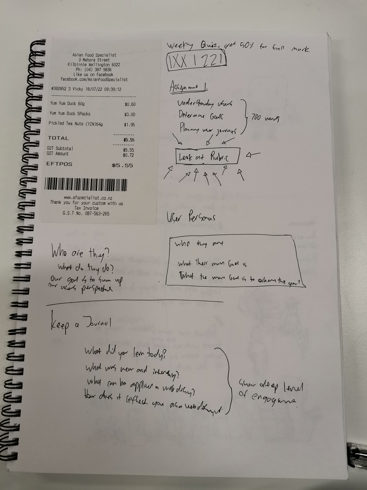

In the first week we've learn't...
How to link images
but it was really big so I googled how to make it smaller on the page
I want to know if I can use variables to scale it to the relitive size of the screen. but I know that If I only define the width that it'll automaticly scale the height.
I hope I'll learn to use css in the future, because this page is lowkey ugly.
This code.org exercise is the first time I ever got to learn programming back when I was a tiny boy. I made steve to crazy things

I remember from my youth there were these things called Alt text you do with images